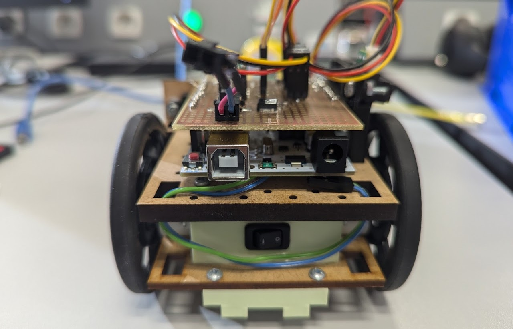
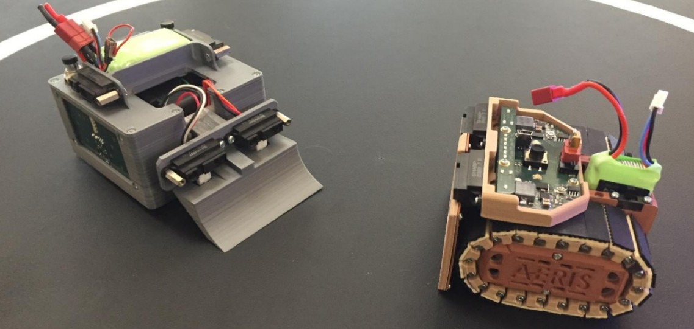
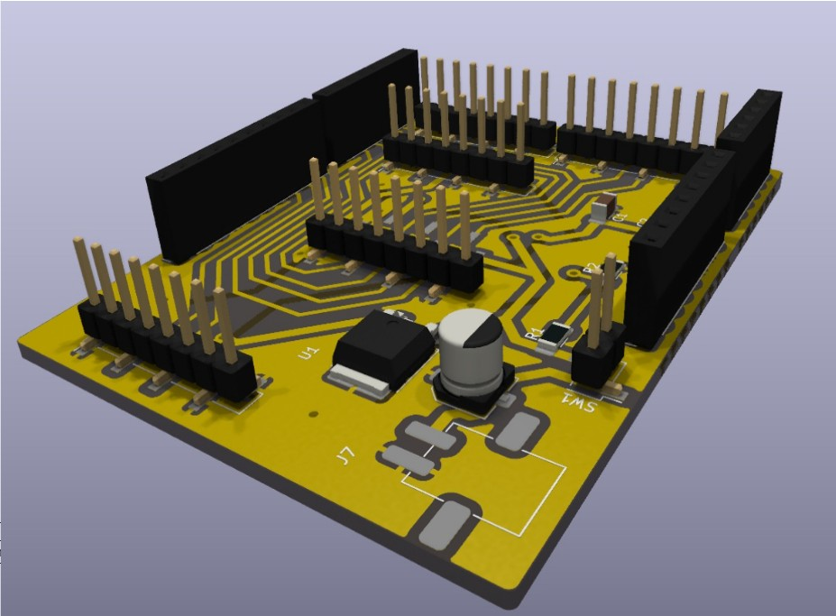

Conception et programmation d’un robot mini-sumo autonome

Le projet Robot SUMO consiste à concevoir un robot autonome capable d’affronter un adversaire sur un terrain de combat circulaire appelé « dohyō ». L’objectif du robot est de détecter son adversaire puis de le pousser hors de la zone de jeu sans sortir lui-même du terrain.

Le robot fonctionne de manière entièrement autonome grâce à différents capteurs que mon équipe et moi avions choisi permettant de détecter la présence d’un adversaire ainsi que les limites du terrain. Après réception du signal de départ infrarouge, le robot analyse les informations issues des capteurs afin d’adapter sa stratégie de déplacement. Il peut avancer, tourner ou changer de direction automatiquement dans le but de rechercher puis pousser son adversaire hors du dohyō.
Ce projet nous a permis de développer des compétences en robotique autonome, en programmation Arduino et en conception électronique. Nous avons également appris à utiliser différents capteurs, à piloter des moteurs via un pont en H, à gérer l’alimentation d’un système embarqué ainsi qu’à concevoir et souder une carte électronique dédiée au robot.